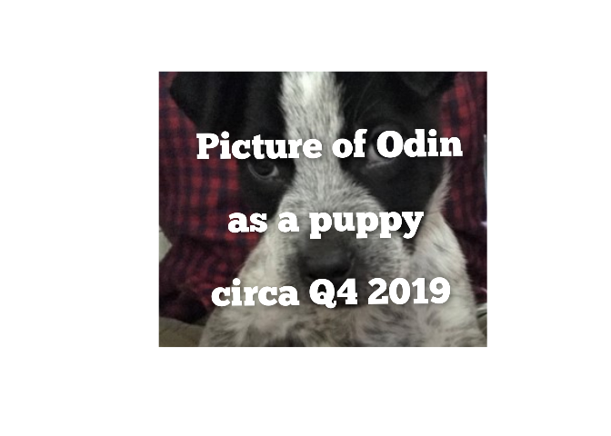

{kuzco} is a simple vision boilerplate built for ollama in R, on top of {ollamar} & {ellmer}. {kuzco} is designed as a computer vision assistant, giving local models guidance on classifying images and return structured data. The goal is to standardize outputs for image classification and use LLMs as an alternative option to keras or torch.
{kuzco} currently supports: classification, recognition, sentiment, text extraction, alt-text creation, and custom computer vision tasks.
Installation
You can install the development version of kuzco like so:
devtools::install_github("frankiethull/kuzco")Example
This is a basic example which shows you how to use kuzco.
here we have an image and want to learn about it:
test_img <- file.path(system.file(package = "kuzco"), "img/test_img.jpg") 
llm for image classification:
llm_results <- llm_image_classification(llm_model = "qwen2.5vl", image = test_img,
backend = 'ollamar')
llm_results |> tibble::as_tibble()
#> # A tibble: 1 × 7
#> image_classification primary_object secondary_object image_description
#> <chr> <chr> <chr> <chr>
#> 1 puppy puppy face a close-up of a puppy wi…
#> # ℹ 3 more variables: image_colors <chr>, image_proba_names <list>,
#> # image_proba_values <list>
llm_results |> str()
#> 'data.frame': 1 obs. of 7 variables:
#> $ image_classification: chr "puppy"
#> $ primary_object : chr "puppy"
#> $ secondary_object : chr "face"
#> $ image_description : chr "a close-up of a puppy with a mix of black and white fur, looking directly at the camera with a curious expression."
#> $ image_colors : chr "#000000, #FFFFFF, #808080"
#> $ image_proba_names :List of 1
#> ..$ : chr "puppy, puppy face, fur, eyes, nose"
#> $ image_proba_values :List of 1
#> ..$ : chr "0.7, 0.2, 0.05, 0.05, 0.05"llm for image sentiment:
llm_emotion <- llm_image_sentiment(llm_model = "qwen2.5vl", image = test_img)
llm_emotion |> str()
#> 'data.frame': 1 obs. of 4 variables:
#> $ image_sentiment : chr "positive"
#> $ image_score : num 0.8
#> $ sentiment_description: chr "The image evokes feelings of warmth and affection due to the adorable appearance of the puppy."
#> $ image_keywords : chr "cute, lovable, friendly, cuddly, appealing"llm for image recognition:
note that the backend of kuzco is flexible as well. This allows users to specify between ‘ollamar’, which suggests structured outputs, while ‘ellmer’ enforces structured outputs.
llm_detection <- llm_image_recognition(llm_model = "qwen2.5vl",
image = test_img,
recognize_object = "nose",
backend = "ollamar")
llm_detection |> str()
#> 'data.frame': 1 obs. of 4 variables:
#> $ object_recognized : chr "yes"
#> $ object_count : int 1
#> $ object_description: chr "The nose is black and is located in the center of the image, slightly below the eyes."
#> $ object_location : chr "center"llm for image text extraction:
kuzco is also useful for OCR tasks, extracting text from images is showcased below:
text_img <- file.path(system.file(package = "kuzco"), "img/text_img.jpg")
text_img |> view_image()
llm_extract_txt <- llm_image_extract_text(llm_model = "qwen2.5vl",
image = text_img,
backend = "ellmer")
llm_extract_txt |> str()
#> 'data.frame': 1 obs. of 2 variables:
#> $ text : chr "Picture of Odin as a puppy"
#> $ confidence_score: num 0.95newer features
llm image customization:
a new feature in kuzco, is a fully customizable function. This allows users to further test computer vision techniques without leaving the kuzco boilerplate.
llm_customized <- llm_image_custom(llm_model = "qwen2.5vl",
image = test_img,
system_prompt = "you are a dog breed expert, you know all about dogs.
tell me the primary breed, secondary breed, and a brief description about both.",
image_prompt = "tell me what kind of dog is in the image?",
example_df = data.frame(
dog_breed_primary = "hound",
dog_breed_secondary = "corgi",
dog_breed_information = "information about the primary and secondary breed"
))
llm_customized |> str()
#> 'data.frame': 1 obs. of 3 variables:
#> $ dog_breed_primary : chr "Blue Heeler"
#> $ dog_breed_secondary : chr "Cowboy Mix"
#> $ dog_breed_information: chr "Blue Heelers are a cattle-working breed known for their intelligence and herding abilities. The primary breed, "| __truncated__additional enhancements:
i/o helpers
kuzco now has view_image & view_llm_results functions within the package, making it easy to view images and display llm results. In addition to this, kuzco now features kuzco_app a fully functioning shiny application within the package. Making it even easier to do computer vision with LLMs in R.
cloud-based LLMs
kuzco now supports all LLM providers that are supported by ellmer! That’s correct, you can now send images to Perplexity, Claude, OpenAI, Gemini, the list goes on. This defaults to “ollama” to maintain the original workflows.
Cloud-hosted LLMs generally offer greater speed and more advanced capabilities, but require users to obtain an API key since inference is handled remotely. While some providers offer a free tier with usage limits, others do not. Keep in mind that using a cloud-hosted LLM comes with less privacy compared to running a model locally, but it enables access to powerful, cutting-edge models. To get started, users should set up their API key in their environment and select a provider-hosted model that supports image processing.
A mistral example below using pixtral-12b, which is still a pretty small model. But leverages mistral’s compute, instead of yours.
# via base R:
Sys.setenv(MISTRAL_API_KEY = "the_api_key_via_the_provider")
# or usethis:
usethis::edit_r_environ()
kuzco::llm_image_classification(provider = "mistral", llm_model = "pixtral-12b", image = test_img)
#> image_classification primary_object secondary_object
#> 1 dog dog ear
#> image_description
#> 1 Close-up of a black and white dog with a red and black checkered background.
#> image_colors image_proba_names
#> 1 #000000, #FFFFFF, #FF0000, #FF00FF dog, ear, fur, eyes, background
#> image_proba_values
#> 1 0.6, 0.2, 0.1, 0.05, 0.05